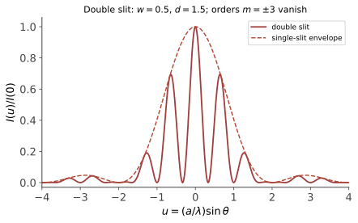

本页目录
光学 · 干涉、衍射与傅里叶光学
对标：Hecht Optics 主干 ｜ 前置：em-02、数分 IV（Fourier） 光是电磁波（em-02 已证），本页收割波动性的三大现象：干涉（叠加 + 相位差）、衍射（障碍即源——Huygens）、以及现代视角的总纲——远场衍射 = 傅里叶变换：透镜是一台光学 Fourier 变换器。
学习层：先预测，孔径怎样写出远场？
1. 先做两个预测
把一个一维孔径送入远场。先不要看下面的揭示，预测：
- 把缝宽变窄，单缝衍射包络的中央主瓣会变宽、变窄，还是不变？若图像按峰值归一化，透过的总功率是否也不变？
- 保持缝宽不变而增大双缝中心距，干涉条纹在无量纲频率坐标上的间距会变大、变小，还是不变？单缝包络会不会跟着移动？
实验台先要求提交这两个判断，提交前不会显示答案。然后切换单缝、双缝和光栅，分别看孔径透射与远场强度怎样对应。
2. 一个不藏量纲的标准模型
取参考长度 \(a\)，把孔径坐标和观察坐标写成
\(\xi\) 与 \(u\) 都是无量纲的；实验中的横轴明确标成 \(\xi=x/a\) 和 \(u=(a/\lambda)\sin\theta\)。令单缝宽度为 \(wa\)、相邻缝中心距为 \(da\)，并以孔径中心为相位原点。采用归一化的复场振幅 \(A(0)=1\)：
这里的 \(A\) 是复振幅，不是亮度；探测器读到的是 \(I(u)/I(0)=|A(u)|^2\)。对称孔径让本实验的相位参考下 \(A\) 恰为实数，但这不等于“振幅和强度是同一个量”。光栅阵因子在 \(\sin(\pi du)=0\) 处取可去奇点的极限；其主极大位于 \(u=m/d\)，但每个峰仍乘着有限缝宽的 sinc 包络。
3. 动手：从透射函数到强度
下面的实验台画出同一组参数的孔径透射 \(t(\xi)\) 与远场归一化强度 \(I(u)/I(0)\)。先提交预测，再缩窄 \(w\)、增大 \(d\)，最后提高光栅缝数 \(N\)。注意：归一化强度便于比较形状；真实的窄缝还会减少通光量。
无 JavaScript 时的静态读法：使用无量纲坐标 \(\xi=x/a\)、\(u=(a/\lambda)\sin\theta\)。矩形单缝给出 \(A_1=\operatorname{sinc}(\pi wu)\)；双缝在同一有限缝宽包络上乘 \(\cos(\pi du)\)；\(N\) 缝再乘 \(\sin(N\pi du)/(N\sin(\pi du))\)，在分母为零处使用连续极限。强度始终是 \(|A|^2\)，不是 \(A\) 本身。变窄缝会让包络变宽但降低未归一化通光量；增大中心距会让条纹间距 \(\Delta u=1/d\) 变小，而不会移动单缝包络。光栅的 \(u=m/d\) 是阵因子主极大，是否显眼还由 sinc 包络决定。
4. 假设与边界
- 这是单色、相干、均匀照明下的一维标量夫琅禾费模型，并用傍轴近似 \(\sin\theta\simeq\theta\)；它忽略偏振、矢量边界条件、像差、噪声和有限探测器。
- “分辨率”不能只由一条公式决定。圆孔的 \(1.22\lambda/D\) 是常用的 Rayleigh 判据约定，不是所有仪器、噪声和算法都必须服从的唯一边界；一维缝的零点宽度也不要直接冒充圆孔 Rayleigh 数。
- 4f 系统在频率面上做的是乘以传递函数 \(H(u)\)：滤波能改变对比度、平滑或增强边缘，但被挡掉的频率没有被恢复，因此滤波不等于超分辨。本实验不加入会暗示“恢复缺失频率”的透明滤镜。
1. 干涉：相位差记账

两束同频波叠加：\(I = I_1 + I_2 + 2\sqrt{I_1I_2}\cos\delta\)（【推导】复振幅相加取模方——交叉项即干涉项；\(\delta\) = 相位差 = \(\frac{2\pi}{\lambda}\times\)光程差）。
杨氏双缝：光程差 \(d\sin\theta\) ⇒ 亮纹 \(d\sin\theta = m\lambda\)——条纹间距 \(\Delta y = \frac{\lambda L}{d}\)：用尺子量出光的波长（1801 年波动说的定音锤；qm-01 将让电子重演此实验——那是量子力学的开幕式）。
薄膜干涉：上下表面反射的双光束，光程差 \(2nt\cos\theta_t\)（+ 半波损失的界面规则：光疏→光密反射相位跳 \(\pi\)）——肥皂泡彩色、增透膜（\(t = \lambda/4n\)：相机镜头泛紫的原因）、牛顿环。Michelson 干涉仪：分振幅双臂互差——测长的终极精度（LIGO 用它听引力波：臂长变化 \(10^{-18}\) m 级，gr-03 收线）。
相干性一嘴：实际光源有限相干长度/时间（谱宽的 Fourier 对偶 \(\Delta\tau\,\Delta\nu \sim 1\)——数分 IV 不确定性关系的光学版）——白光条纹只有零级附近可见的原因；激光的长相干性使全息成为可能。
2. 衍射：Huygens–Fresnel 与两大标准像
原理：波前每点是次波源，后续波场 = 次波相干叠加（Kirchhoff 给出严格积分表述【引用】）。
单缝夫琅禾费衍射【推导】：缝内各点次波在角 \(\theta\) 方向的相位差连续分布，积分：
暗纹 \(a\sin\theta = m\lambda\)；中央主瓣宽 \(\sim \frac{2\lambda}{a}\)——缝越窄、散得越开（Fourier 对偶的物理宣言，§3 点题）。
圆孔与分辨率约定：Airy 斑第一暗环 \(\theta \approx 1.22\frac{\lambda}{D}\)；把两点刚好可分辨取在“一个峰对准另一个的第一暗环”是常用的 Rayleigh 判据。它是可沟通的判据，不是脱离像差、噪声、采样和重建方法的唯一分辨率定律；超分辨方法也不能被这一个数字概括。
光栅：\(N\) 缝干涉 × 单缝衍射包络——阵因子主极大满足 \(d\sin\theta = m\lambda\)，峰会随 \(N\) 增多而变窄，但有限缝宽的包络仍决定哪些级次能看见：这才是光谱仪的理想化骨架（atom-01 的谱线测量靠它）。
3. 傅里叶光学（现代总纲）
定理（标量夫琅禾费衍射 = Fourier 变换）【骨架】 在远场（或透镜焦面）的复振幅
——孔径函数的 Fourier 变换（Huygens 积分在远场近似下的直接形态）。单缝 → sinc、双缝 → 余弦调制、光栅 → 梳状谱：§1–2 的理想结果都来自这一个积分，而不是把复振幅直接当作强度。
推论（透镜把频谱搬到焦面）：透镜把远场搬到焦面——焦面上可读出物的空间频谱；4f 系统在此用传递函数做空间滤波，低通可平滑、高通可强调边缘，但遮挡就是乘法意义上的信息丢失，不能凭空恢复被挡的频率，也不自动带来超分辨。阿贝成像理论把显微镜的可收集最高空间频率与分辨率联系起来，是 Rayleigh 约定的频域视角之一。
🔗 对账：图像的频域直觉（ai/comfy 课里潜空间、低频构图/高频细节的语言）在光学里是物理实体——"高频=细节"这句话最初是焦面上看得见摸得着的光斑位置。
4. 练习与要点
例 1（双缝手算） \(\lambda = 633\) nm（氦氖激光）、\(d = 0.1\) mm、屏距 2 m：条纹间距 \(\Delta y = \frac{\lambda L}{d} \approx 12.7\) mm——桌面可见；换白光则各色条纹错开成彩带（零级白色居中）。
例 2（分辨极限估算） 人眼瞳孔 3 mm、\(\lambda = 550\) nm：\(\theta \approx 1.22\lambda/D \approx 2.2\times10^{-4}\) rad——10 m 外分辨 ~2 mm：视力表的物理设定；同式算哈勃（\(D = 2.4\) m）角分辨 \(\sim 0.05''\)。
例 3（Fourier 光学判型） 焦面上放小孔只留零频：像变成均匀亮度轮廓消失（低通到极限）；放中心挡片去零频：暗背景亮边缘（高通=相衬显微的近亲）——"改频谱 = 改图像"用光路亲手实现，卷积定理的实验课。\(\blacksquare\)
"力学与场"板块九页完卷。下一板块从热与统计开始：把 \(10^{23}\) 个粒子的力学变成三条定律的热力学。